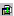
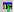

To view the symbol in the DIScover Browser
Select a symbol within your source pane and click .
If you have the model browser open, you can toggle back and forth between it and your IDE by:
• clicking  in Borland JBuilder
• double-clicking an entity or file in the model browser
• clicking for a selected entity in Borland JBuilder